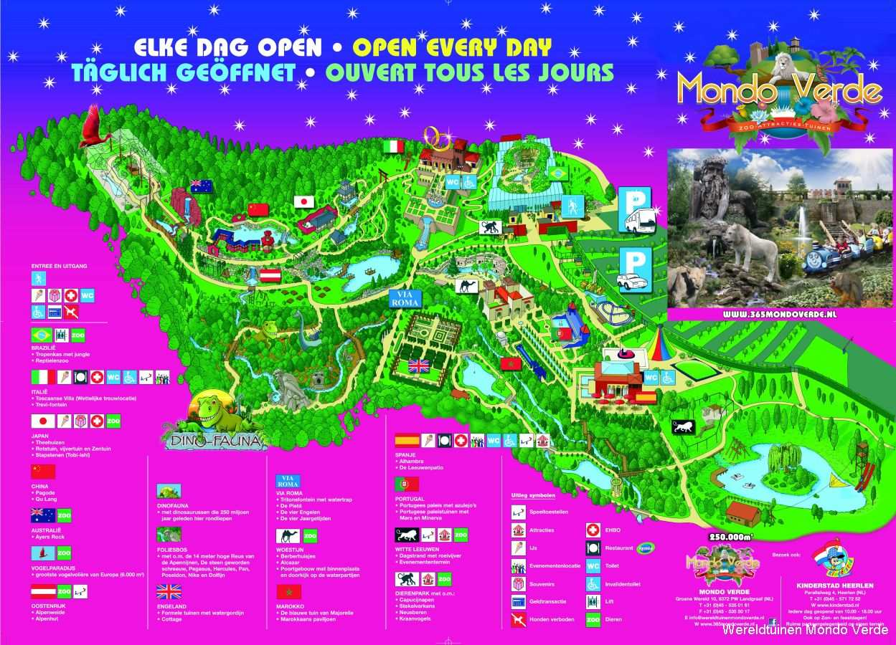

Plattegrond van het park
De plattegrond van Mondo Verde geeft een overzicht van de verschillende themagebieden, attracties en faciliteiten in het park. Het helpt bezoekers om hun route te plannen en de hoogtepunten van het park te ontdekken.
De plattegrond van Mondo Verde geeft een overzicht van de verschillende themagebieden, attracties en faciliteiten in het park. Het helpt bezoekers om hun route te plannen en de hoogtepunten van het park te ontdekken.
Het zwembad van Mondo Verde biedt een verfrissende ontsnapping aan de warme dagen. Het is een ideale plek voor gezinnen om te ontspannen en plezier te hebben in het water.
Mondo Verde herbergt een verscheidenheid aan diersoorten, van exotische vogels tot indrukwekkende zoogdieren. Het dierenpark biedt bezoekers de kans om deze dieren van dichtbij te zien en meer te leren over hun leefomgeving.
Dit fragment is aangeboden door Audiotrimmer